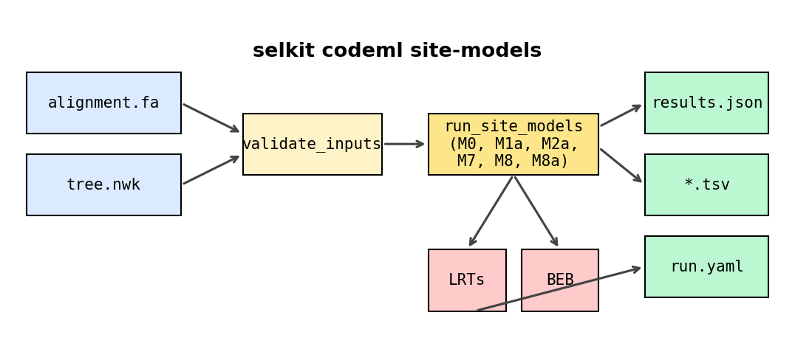

Your first selkit run: validation + M0 baseline
This tutorial walks you from pip install selkit to a validated codon alignment
and a fitted M0 (one-ratio) model. By the end you will know the average dN/dS (ω)
across the alignment and understand what that number means — and what it does not
tell you about site-specific selection.
Dataset: 13-taxon HIV envelope V3 codon alignment (91 codons) from the
HIVNSsites example distributed with PAML.
Hypothesis answered: What is the average ω across my alignment? Is there a single signal of purifying, neutral, or positive selection averaged over all sites?
Step 1: Install selkit
Requires Python 3.11 or newer.
pip install selkit
Confirm the install:
selkit --version
Step 2: Download the toy dataset
The tutorial uses a 13-taxon, 91-codon HIV envelope alignment (roughly 8 KB each).
# with curl
curl -O https://raw.githubusercontent.com/JLSteenwyk/selkit/main/tests/validation/corpus/hiv_13s/alignment.fa
curl -O https://raw.githubusercontent.com/JLSteenwyk/selkit/main/tests/validation/corpus/hiv_13s/tree.nwk
# or with wget
wget https://raw.githubusercontent.com/JLSteenwyk/selkit/main/tests/validation/corpus/hiv_13s/alignment.fa
wget https://raw.githubusercontent.com/JLSteenwyk/selkit/main/tests/validation/corpus/hiv_13s/tree.nwk
After downloading you should have two files in the current directory:
alignment.fa— 13 sequences, each 273 nucleotides (91 codons).tree.nwk— unrooted Newick tree with 13 tips.
Step 3: Validate the inputs
Always validate before fitting. Validation is fast (milliseconds) and catches problems before you spend minutes or hours on an optimisation run.
selkit validate --alignment alignment.fa --tree tree.nwk
Expected output:
OK: 13 taxa, 91 codons, genetic code = standard
This single line confirms all four of:
The alignment parses as a valid codon alignment (FASTA auto-detected).
Every sequence length is a multiple of 3.
No mid-sequence stop codons are present.
The set of taxon names in the alignment exactly matches the tip labels in the tree.
selkit validate exits with code 0 on success and 1 on any error, making
it composable in shell pipelines and CI. If your alignment has a problem — a taxon
name typo, a frame-shifted sequence, an accidental stop codon — the error message
names the exact issue before any model is fitted.
{kind=link}

selkit pipeline: inputs → validate → fit → outputs.
Step 4: Fit the M0 model
M0 (the “one-ratio” model) estimates a single ω shared by every site and every branch. It is the simplest possible model and the right starting point.
selkit codeml site-models \
--alignment alignment.fa \
--tree tree.nwk \
--output results/ \
--models M0 \
--n-starts 3 --seed 0
Flags used:
--models M0— fit M0 only (default bundle is M0 + M1a + M2a + M7 + M8 + M8a).--n-starts 3— run 3 independent L-BFGS-B starts and keep the best.--seed 0— deterministic starting values; reproduce this exact run anytime.
Expected runtime: approximately 8 seconds on a laptop.
Step 5: Interpret the console output
selkit prints a summary table when the run completes:
selkit codeml site-models
┏━━━━━━━┳━━━━━━━━━━━┳━━━━━━━━━━━━━━━━━━━┳━━━━━━━━━━━┓
┃ model ┃ lnL ┃ omega (or omega2) ┃ converged ┃
┡━━━━━━━╇━━━━━━━━━━━╇━━━━━━━━━━━━━━━━━━━╇━━━━━━━━━━━┩
│ M0 │ -1137.688 │ 0.9013 │ yes │
└───────┴───────────┴───────────────────┴───────────┘
Reading the columns:
lnL — log-likelihood at the optimum (−1137.688).
omega — the single fitted ω (0.9013).
converged — the top-2 starts agreed within the convergence tolerance.
What does ω ≈ 0.90 mean?
ω is the ratio of non-synonymous to synonymous substitution rates (dN/dS). A value just below 1 means the average substitution rate across all sites is nearly neutral. This is a common pattern for surface-exposed viral genes: most sites are under purifying selection (ω << 1), a few are effectively neutral (ω ≈ 1), and a subset may be under positive selection (ω > 1). M0 collapses all of that into one number, so ω = 0.90 does not rule out positive selection at individual sites.
Additional fitted parameters: κ (transition/transversion ratio) = 2.47. The model also optimises 23 branch lengths jointly with ω and κ, for 25 free parameters total.
Step 6: Inspect the output files
selkit writes four files to results/:
results/
├── results.json # canonical output (all fits, params, branch lengths)
├── fits.tsv # tabular summary of model fits
├── lrts.tsv # likelihood-ratio tests (empty for a single-model run)
└── run.yaml # full config; reproduce with: selkit rerun run.yaml
The TSV is convenient for quick inspection:
cat results/fits.tsv
model lnL n_params converged runtime_s params
M0 -1137.688190 25 true 7.884 {"kappa": 2.4717276201319955, "omega": 0.9012852324746679}
Notes on the columns:
n_params = 25— 1 ω + 1 κ + 23 branch lengths, all optimised jointly.lrts.tsvis empty because a single-model run has no null/alt pair to test.run.yamlcaptures every flag and seed; runselkit rerun results/run.yamlto reproduce this exact analysis on any machine.
What next?
M0 answers the question “what is the average ω?” but a per-site heterogeneity test is needed to answer “are some sites under positive selection even when the average is not above 1?”. That is the subject of the next tutorial, which fits M1a and M2a and runs the likelihood-ratio test: